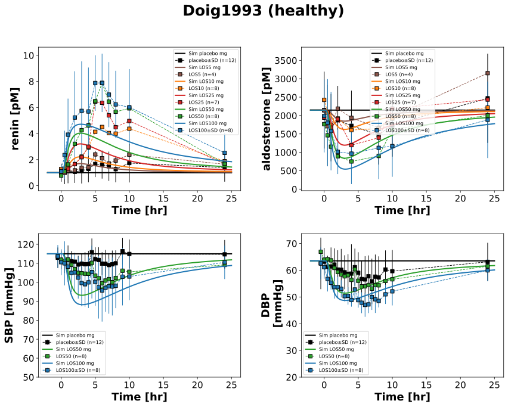
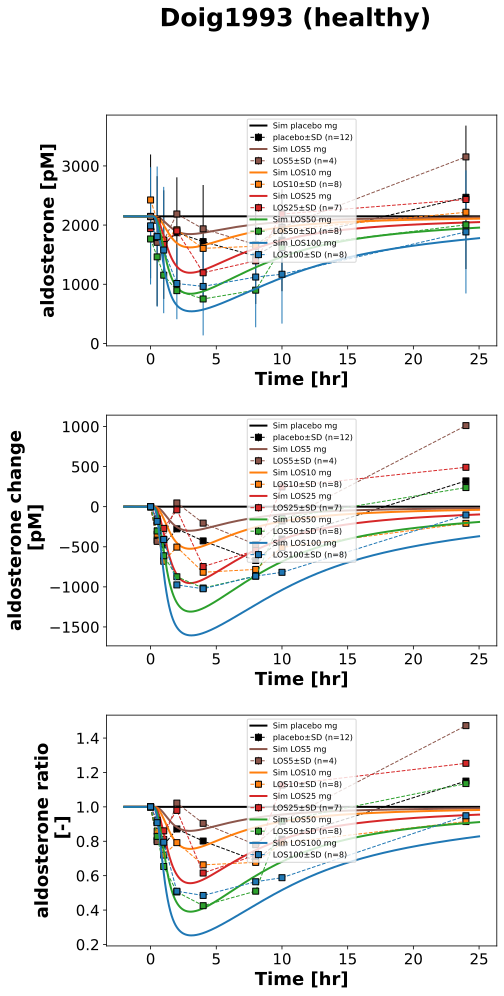

|  |
|  |
../../../../experiments/studies/doig1993.py
from typing import Dict
from sbmlsim.data import DataSet, load_pkdb_dataframe
from sbmlsim.fit import FitMapping, FitData
from sbmlutils.console import console
from pkdb_models.models.losartan.experiments.base_experiment import (
LosartanSimulationExperiment,
)
from pkdb_models.models.losartan.experiments.metadata import (
Tissue, Route, Dosing, ApplicationForm, Health, \
Fasting, LosartanMappingMetaData, Coadministration, Genotype,
)
from sbmlsim.plot import Axis, Figure
from sbmlsim.simulation import Timecourse, TimecourseSim
from pkdb_models.models.losartan.helpers import run_experiments
class Doig1993(LosartanSimulationExperiment):
"""Simulation experiment of Doig1993."""
info = {
"[ren]": "renin",
"[ald]": "aldosterone",
"ald_change": "aldosterone_change_abs",
"ald_ratio": "aldosterone_change_rel",
"SBP": "sbp",
"DBP": "dbp",
}
positions = [
"supine",
# "erect"
]
colors = {
"placebo": "black",
"LOS5": "tab:brown",
"LOS10": "tab:orange",
"LOS25": "tab:red",
"LOS50": "tab:green",
"LOS100": "tab:blue"
}
losp_doses = {
"placebo": 0, # [mg]
"LOS5": 5, # [mg]
"LOS10": 10, # [mg]
"LOS25": 25, # [mg]
"LOS50": 50, # [mg]
"LOS100": 100, #[mg]
}
fig1_interventions = ["placebo", "LOS50", "LOS100"]
fig2_interventions = ["placebo","LOS5", "LOS10", "LOS25", "LOS50", "LOS100"]
def datasets(self) -> Dict[str, DataSet]:
dsets = {}
for fig_id in ["Fig1", "Fig2"]:
df = load_pkdb_dataframe(f"{self.sid}_{fig_id}", data_path=self.data_path)
for label, df_label in df.groupby("label"):
dset = DataSet.from_df(df_label, self.ureg)
# unit conversion to mole/l
if label.endswith("_renin"):
dset.unit_conversion("mean", 1 / self.Mr.ren)
elif label.endswith("_aldosterone"):
dset.unit_conversion("mean", 1 / self.Mr.ald)
elif label.endswith("_aldosterone_change_abs"):
dset.unit_conversion("mean", 1 / self.Mr.ald)
dsets[f"{label}"] = dset
# console.print(dsets)
# console.print(dsets.keys())
return dsets
def simulations(self) -> Dict[str, TimecourseSim]:
Q_ = self.Q_
tcsims = {}
for intervention, dose in self.losp_doses.items():
tcsims[f"po_{intervention}"] = TimecourseSim(
[
Timecourse(
start=0,
end=2 * 60, # [min]
steps=500,
changes={
**self.default_changes(),
"BW": Q_(76.5, "kg"),
"ald_ref": (Q_(774.12, "pg/ml") / self.Mr.ald), # placebo
"[ald]": (Q_(774.12, "pg/ml") / self.Mr.ald), # placebo
"ren_ref": (Q_(44.8, "pg/ml") / self.Mr.ren), # placebo
"[ren]": (Q_(44.8, "pg/ml") / self.Mr.ren), # placebo
"SBP_ref": Q_((113 + 117) / 2, "mmHg"), # mean of erect and supine sbp
"DBP_ref": Q_((63 + 64) / 2, "mmHg"), # mean of erect and supine dbp
},
),
Timecourse(
start=0,
end=25 * 60, # [min]
steps=500,
changes={
"PODOSE_los": Q_(dose, "mg") * self.Mr.los / self.Mr.losp,
},
),
],
time_offset=-2 * 60
)
# console.print(tcsims)
return tcsims
def fit_mappings(self) -> Dict[str, FitMapping]:
mappings = {}
for k, sid in enumerate(self.info):
name = self.info[sid]
for intervention in self.losp_doses:
if sid in {"ald_change", "ald_ratio"}:
# only counting the absolute values
continue
if sid in {"SBP", "DBP"} and intervention not in self.fig1_interventions:
continue
if sid in {"SBP", "DBP"}:
dset_id = f"{intervention}_supine_{name}"
else:
dset_id = f"{intervention}_{name}"
mappings[f"fm_po_{intervention}_{name}"] = FitMapping(
self,
reference=FitData(
self,
dataset=dset_id,
xid="time",
yid="mean",
yid_sd="mean_sd" if intervention in ["placebo", "LOS100"] else None,
count="count",
),
observable=FitData(
self, task=f"task_po_{intervention}", xid="time", yid=sid,
),
metadata=LosartanMappingMetaData(
tissue=Tissue.PLASMA,
route=Route.PO,
application_form=ApplicationForm.SOLUTION,
dosing=Dosing.SINGLE,
health=Health.HEALTHY,
fasting=Fasting.FASTED,
coadministration=Coadministration.NONE,
),
)
# console.print(mappings)
return mappings
def figures(self) -> Dict[str, Figure]:
return {
**self.fig1_2(),
**self.fig_aldosterone(),
}
def fig1_2(self) -> Dict[str, Figure]:
fig = Figure(
experiment=self,
sid="Fig1",
num_rows=2,
num_cols=2,
name=f"{self.__class__.__name__} (healthy)",
)
plots = fig.create_plots(
xaxis=Axis(self.label_time, unit=self.unit_time), legend=True
)
plots[0].set_yaxis(self.labels["[ren]"], unit=self.units["[ren]"])
plots[1].set_yaxis(self.labels["[ald]"], unit=self.units["[ald]"])
plots[2].set_yaxis(self.labels["SBP"], unit=self.units["SBP"], min=50)
plots[3].set_yaxis(self.labels["DBP"], unit=self.units["DBP"], min=20)
for k, sid in enumerate(["[ren]","[ald]","SBP", "DBP"]):
name = self.info[sid]
for intervention in self.losp_doses:
if sid in {"SBP", "DBP"} and intervention not in self.fig1_interventions:
continue
# simulation
plots[k].add_data(
task=f"task_po_{intervention}",
xid="time",
yid=sid,
label=f"Sim {intervention} mg",
color=self.colors[intervention],
)
# data (supine, erect)
if sid in {"SBP", "DBP"}:
for position in self.positions:
plots[k].add_data(
dataset=f"{intervention}_{position}_{name}",
xid="time",
yid="mean",
yid_sd="mean_sd" if intervention in ["placebo", "LOS100"] else None,
count="count",
label=intervention if position == "supine" else None,
color=self.colors[intervention],
)
else:
plots[k].add_data(
dataset=f"{intervention}_{name}",
xid="time",
yid="mean",
yid_sd="mean_sd" if intervention in ["placebo", "LOS100"] else None,
count="count",
label=intervention,
color=self.colors[intervention],
)
return {
fig.sid: fig,
}
def fig_aldosterone(self) -> Dict[str, Figure]:
fig = Figure(
experiment=self,
sid="Fig_test",
num_rows=3,
num_cols=1,
name=f"{self.__class__.__name__} (healthy)",
)
plots = fig.create_plots(
xaxis=Axis(self.label_time, unit=self.unit_time), legend=True
)
plots[0].set_yaxis(self.labels["[ald]"], unit=self.units["[ald]"])
plots[1].set_yaxis(self.labels["ald_change"], unit=self.units["ald_change"])
plots[2].set_yaxis(self.labels["ald_ratio"], unit=self.units["ald_ratio"])
for intervention in self.losp_doses:
for k, sid in enumerate(["[ald]", "ald_change", "ald_ratio"]):
# simulation
plots[k].add_data(
task=f"task_po_{intervention}",
xid="time",
yid=sid,
label=f"Sim {intervention} mg",
color=self.colors[intervention],
)
name = self.info[sid]
# data
plots[k].add_data(
dataset=f"{intervention}_{name}",
xid="time",
yid="mean",
yid_sd="mean_sd",
count="count",
label=f"{intervention}",
color=self.colors[f"{intervention}"]
)
return {
fig.sid: fig,
}
if __name__ == "__main__":
run_experiments(Doig1993, output_dir=Doig1993.__name__)
{kind=link}
{kind=link}